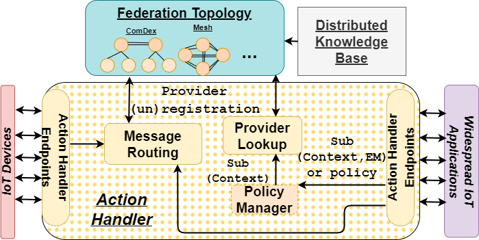

ComDeX Architecture
Overview
ComDeX is an advanced IoT platform designed to foster data sharing among diverse stakeholders in a smart community, enhancing operations and services. The architecture incorporates property graph-based entities and operates within a federated pub/sub broker network.

Core Components
The ComDeX architecture, focusing on property graph-based entities in a federated broker network, ensures scalability across di- verse IoT ecosystems. Entities, as representations of real-world objects, carry unique identifiers and types in URI format. They are associated with properties and relationships, manipulated through specific API actions in the ComDeX system. Brokers manage and distribute entity data within their operation domains. They organize entities in a hierarchical namespace structure, supporting both fine and coarse-grain CRUD actions. The ComDeX’s key characteristic is the broker federation, promoting efficient data exchange across communities. Brokers function as data providers or consumers, depending on the context. The advertisement mechanism, implemented via MQTT messages, ensures the visibility of new context information, keeping the network up-to-date. Action Handlers act as conduits between publishers/subscribers and brokers, validating API Actions and managing data flow within the system. They direct entity data to the appropriate broker, ensuring data integrity. The ComDeX system architecture is deliberately structured to ensure high scalability. It can seamlessly accommodate the heterogeneity of IoT ecosystems, spanning from straightforward single community setups to intricately woven multi-community networks.
Federation Topology
ComDeX operates within a federation of brokers. These autonomous brokers collaborate to conduct data discovery operations and connect following a predefined hierarchical hybrid topology, which can be based on smart domain separation, geographical areas, or both.
Distributed Knowledge Base
The Distributed Knowledge Base is made up of schema files specifying the concepts of ComDeX’s information model. This model is based on property graphs and is adaptable to new data models by extending existing ones. The Knowledge Base also stores information about the current broker topology to assist new brokers wishing to join the system.
Action Handler
The Action Handler provides an API for various clients (producers/consumers) to perform diverse “Actions”. These actions can be defined as any operation necessary for the exchange of information between clients and brokers. The Action Handler also utilizes several sub-components like the message routing component, provider lookup component, and policy manager to execute commands and manage data flows.